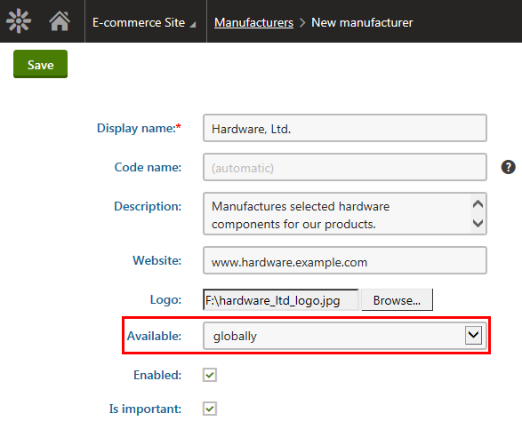
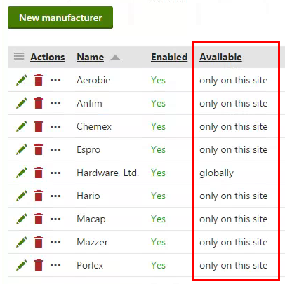
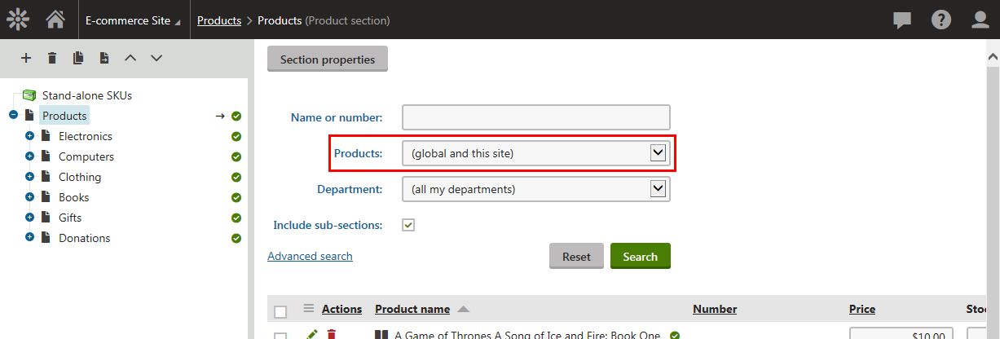
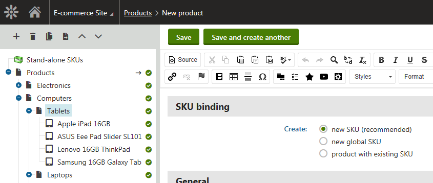
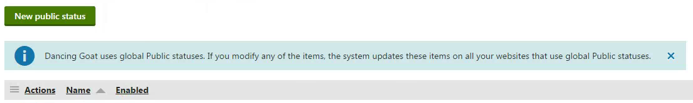

Using global e-commerce objects and settings
On this page, you can find information about the differences when using
Global e-commerce objects (e.g., products, departments, payment methods)
Global e-commerce settings (e.g., currencies, tax classes)
See the whole list of objects and settings and their type in Choosing site or global e-commerce configuration.
Using global e-commerce objects
After enabling global objects from the group with site and global objects together on your Kentico instance, when you create a new object, you need to decide whether the object should be global or site. Because of that, the system displays the Available field while creating a new object.
The system displays the Available field only to users who have sufficient permissions, i.e., who are allowed to modify global data. Permissions are one of the topics in the e-commerce configuration steps.
In the Available field, you have the following options:
Only on this site – the option allows you to create a new site-specific object.
Globally – the option allows you to create a new global object.

Creating a global e-commerce manufacturer
If you enable global objects for an e-commerce object from the both site and global group, the system informs the users about availability of such objects with the Available column on the object listing pages.

The Available column on object listings
Choosing site or global e-commerce configuration
Using global e-commerce objects and settings
Working with global and site products
As products are the most complex objects in the E-commerce Solution, the Products application offers a more complex administration interface.
If you allow global products for a given site, the advanced search allows you to view global products, site-specific products, or a mix of global and site-specific products. If you don't allow global products for a given site, the system displays only products created on this site.

Using site-specific and global products
If you allowed global products for a given site and decide to add a new product, you can select from the following SKU (product object) binding options:
The following options are available when you create default page+SKU products. In this type of products, the product consists of a standard page linked to a SKU object.
Create new SKU (recommended) – creates a site product. More technically, the system creates a page (a site object) with a new site-specific SKU object. The recommended option.
Create new global SKU – creates a global product. More technically, the system creates a page (on the current site) and a new global SKU object. Use this option when you want to create a global product on the first site.
Create product with existing SKU – creates a site or global product. More technically, the system creates a page (on the current site) and you need to bind an existing SKU to the created page. Click Select and then select the required SKU (site-specific or global) in the Select product dialog. Use this option when you create a global product on a site but the SKU object of the product is already available in the system.

Creating a new product
Using global e-commerce settings
When you enable global settings on a site, the system lists only global objects. For modifying global settings, use the Multistore configuration application.
If you open the site settings in the Store configuration application, the system notifies you that global settings are used.

Global settings are used warning